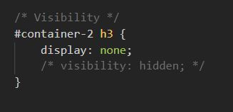
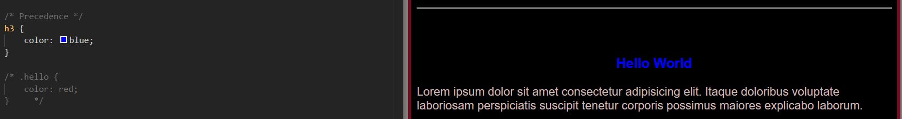
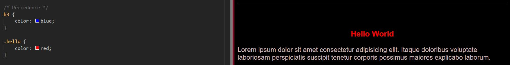
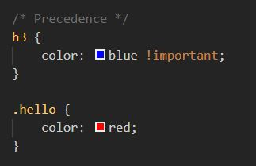
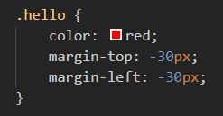

Visibiltity, Order and Negative Margin
Notes:
- display: none;
- This CSS style is used to remove elements as needed
- Used more often than (visibility: none;
- Used for responsive websites.
- Removes the element/object from the DOM (Data Object Model)
- May also use (visibility: hidden;) but only hides the element. Makes invisible.
- Order of Precedence
- Normally, the order of prcedence is determined by its location in the CSS style. The further down the CSS list the attribute is the higher the precedence.
- If a class of an element and the element are called separately, the class takes precedence.
- In other words, targeting a class overides the element.
- To override a specific style with another style, use the [
!important] flag.



- Negative Margin
- Avoid negative margin if at all possible. But it is technically able to be done.
- This is a way to move elements inward as opposed to out.
- Cannot be done with padding though.
